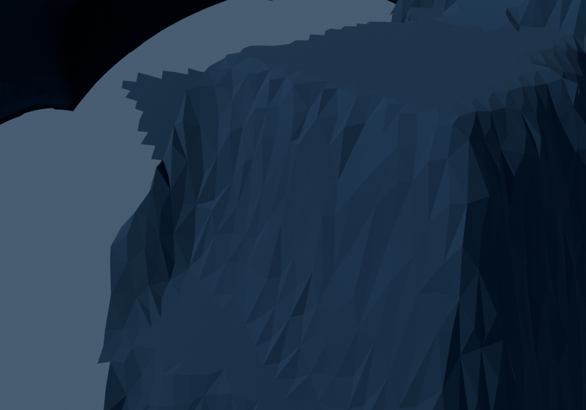
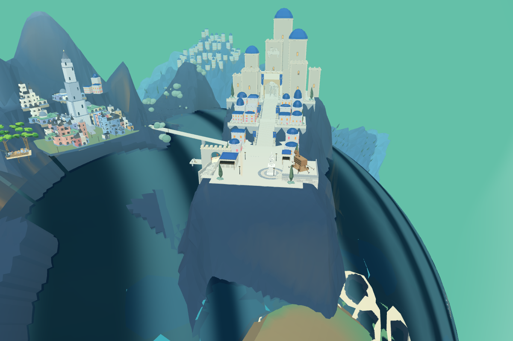
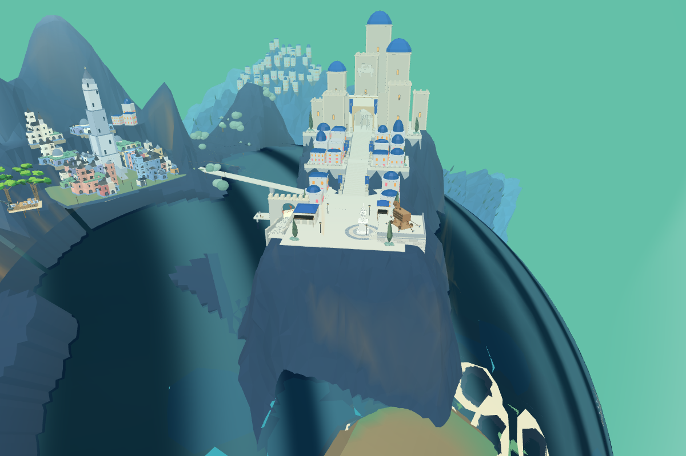
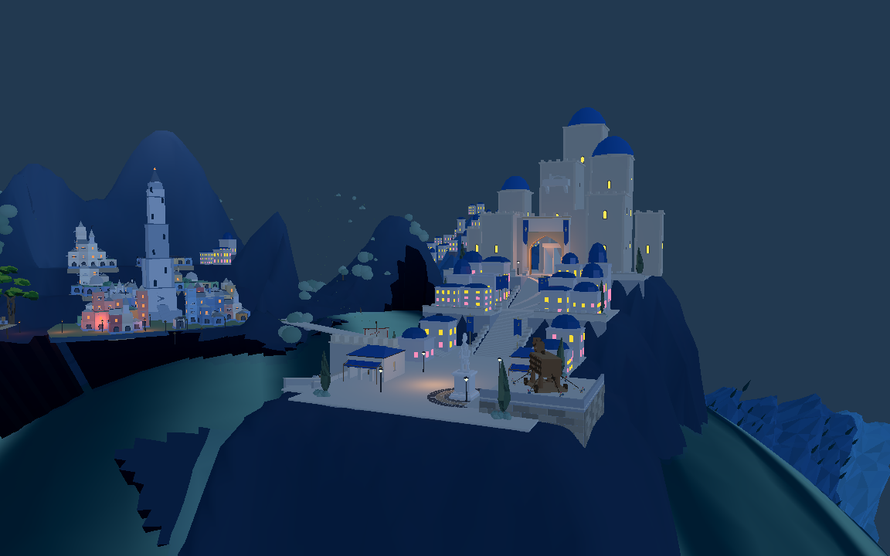

输入来自当前8931地形，保留此前已修正的球面岸线。第一轮分出岩层，第二轮调整折线与错位。以下是实际Blender渲染，不是新概念图。



局部折线改善，整体高差和巨大岩面仍不符合认可目标。诊断相机冻结主循环，照明不是最终目标验收。

182个主山面修改点匹配Web，保护区漂移0、检测到翻面0。两轮.blend文件保留，实际源数据已回接。尚未完成整体城池美术及完整战役。
原游戏8931 · Web几何检查 · Godot实网格检查